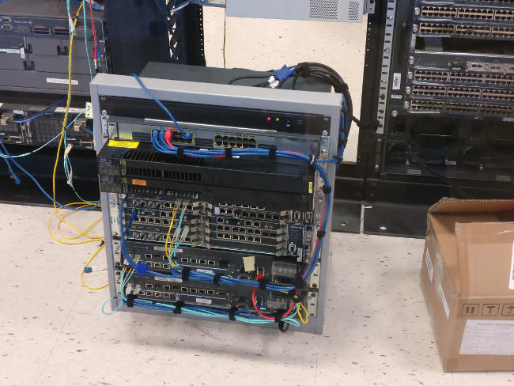

Patch Panel Project

Overview
The Networking, Integration, and Automation (NIA) lab at Burns & McDonnell serves as a test site for device configuration, an educational tool for NIA engineers, and as a resource to lease out to clients. A Patch Network was needed to clean up the appearance of the lab and improve efficiency and safety. High numbers of engineering hours were spent running cables and testing continuity. The cable runs were often incorrect and sloppy, making it difficult and unsafe to work in the lab.
The patch network involved 21 separate racks with Ethernet, single-mode fiber, 62.5µm multi-mode fiber, GPS signal, and IRIG clock signal connections.
My Role
I managed the patch panel project and handled the installation of the patch network. This role included:
- Project planning - I planned the timeline for this project and did the preliminary research into the feasibility of different options for the patch network.
- Running team meetings - I had check-ins and planning meetings with the lab director, the NIA projects director, and other NIA engineers to give updates as well as take inputs and suggestions for the project.
- Managing material lists - I sourced all of the materials for the patch network. This included patch panels, keystones, cabling, connectors, cable management accessories, cable runways, and tools.
- Managing a $10,000 budget - Along with creating a materials list, I also worked to source items that would keep this project under budget.
- Installation - I installed the whole patch network. This included installing patch panels, installing keystones, running cables, terminating connectors, cable management, and continuity testing.
The project came in on time and under budget.
Documentation and Details

The main patch cabinet front. The GPS splitter and clock are at the bottom.

The inside of the main patch cabinet. I managed all of the cables coming into this cabinet.

The other side of the same patch cabinet.

One of three rows of racks in the lab. You can see the patch panels at the top of the racks (You can also see how messy the cable management has been up to this point).

Cable management on the back of some of the patch panels.

A close up of the rear of one of the patch panels.

Here is an easter egg! This was a portable rack that was headed off to a client for educational purposes. I did all of the cable management and device installation.